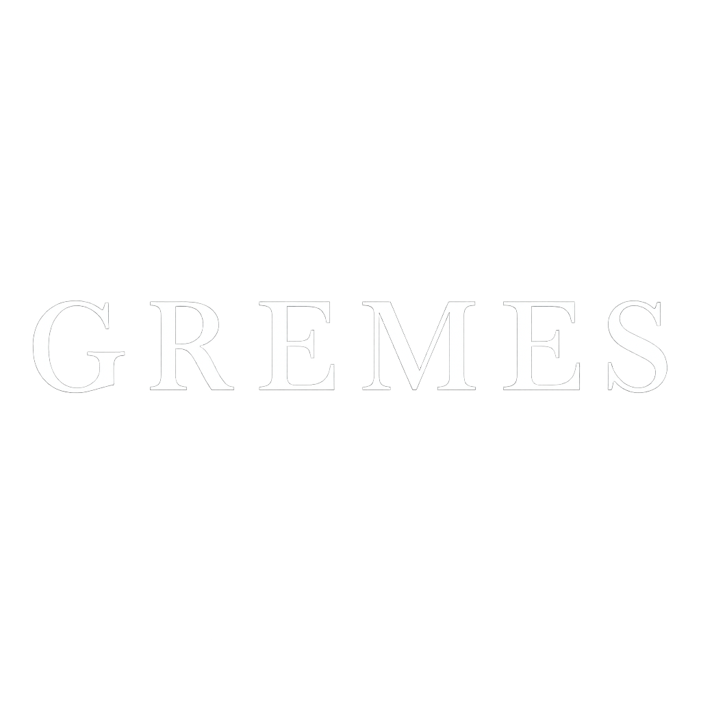

La Cantina Gremes nasce nella quiete e nell’incanto del Maso Plotegher, un angolo suggestivo del Trentino dove il tempo sembra rallentare e la natura si fa custode di antiche tradizioni. Qui, tra filari ordinati e profumi di terra, si tramanda da generazioni una profonda passione per il vino, coltivata con dedizione e rispetto. Ogni giorno, ci prendiamo cura delle nostre vigne con gesti pazienti e consapevoli, seguendo i ritmi della terra e scegliendo pratiche sostenibili che esaltano le peculiarità del territorio. Crediamo nella valorizzazione dei vitigni autoctoni, autentica espressione della nostra identità, e nella vinificazione artigianale, che unisce innovazione e memoria contadina. Alla Cantina Gremes, ogni bottiglia racconta una storia: fatta di famiglia, di fatica, di stagioni che si rincorrono e di un legame profondo con il luogo che chiamiamo casa.
Un rosso elegante con note di frutti di bosco e spezie, affinato in botti di rovere.

Fresco e minerale, ideale per accompagnare piatti della tradizione trentina.
Vieni a scoprire il fascino autentico del nostro maso, un luogo ricco di tradizione e passione che racconta la storia secolare del vino trentino. Ti invitiamo a partecipare alle nostre visite guidate, durante le quali potrai esplorare i vigneti curati con amore, conoscere le tecniche di coltivazione sostenibile e osservare da vicino le fasi di produzione che rendono unici i nostri vini. Le degustazioni, condotte da esperti sommelier, ti offriranno l’opportunità di assaporare una selezione di vini pregiati, abbinati a prodotti locali genuini, per un’esperienza sensoriale completa e indimenticabile. Prenota la tua visita con anticipo scrivendoci tramite i contatti qui sotto: saremo felici di accoglierti e condividere con te la nostra passione per il territorio e il buon bere.
Porta a casa il sapore autentico del Trentino o vieni a viverlo di persona tra le nostre vigne.
Tre bottiglie selezionate tra i nostri migliori vini: Rosso Gremes, Bianco Plotegher e un'etichetta stagionale in edizione limitata. Include note di degustazione personalizzate.

Scopri il nostro maso, passeggia tra i filari, visita la cantina e degusta i vini Gremes accompagnati da prodotti locali, in un'esperienza immersiva nel cuore del Trentino.
Email: info@cantinagremes.it
Telefono: +39 0461 000000
Maso Plotegher, 38060 Aldeno (TN)